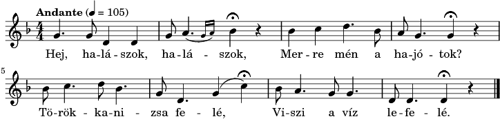

-
Hej, halászok, halászok!
Mit fogott a hálótok?
Nem fogott az egyebet
Vörösszárnyú keszeget.
-
Hát a keszeg mit eszik,
Ha a bárkába teszik?
Nem eszik az egyebet,
Petrezselyemgyökeret.
- A csitári hegyek alatt
- A horgosi csárda
- A jó lovas katonának
- A Vidrócki híres nyája
- Által mennék én a Tiszán
- Az bajom van véled
- Azt gondoltam, eső esik
- Babám, az ajtót be ne lakatold
- Béreslegény
- Bonchidai menyecskék
- Csillagok, csillagok
- Csínom Palkó
- Elindultam szép hazámból
- Ellopták szívemet
- Elmegyek, elmegyek, el is van
- Elmegyek, elmegyek, hosszú útra
- Elment a két lány
- Elmúltak a mézeshetek
- Én az éjjel nem aludtam egy órát
- Erdő, erdő, erdő
- Erdő, erdő, kerek erdő, madár lakik benne kettő
- Érik a szőlő
- Felfutott a szőlő a háztetőre
- Felülről fúj az őszi szél
- Gábor Áron rézágyúja
- Gerencséri utca
- Győri kanász a dombon
- Hajlik a bojzafa
- Harangoznak Szebenbe'
- Haza is kéne már menni
- Hej, halászok
- Hej, Jancsika
- Hej, rozmaring
- Hej, Vargáné
- Hull a szilva
- Jaj, de beteg vagyok
- Jó bort árul Sirjainé
- Jól van dolga
- Két malomra tartok számot
- Két szál pünkösdrózsa
- Kimentem a selyem rétre
- Kincsem, komámasszony
- Kis kece lányom
- Kőrösfői kertek alatt
- Kossuth Lajos azt üzente
- Madárka, madárka
- Már minálunk, babám
- Már Vidróczki emelgeti
- Még azt mondják, nem illik
- Még azt mondják, ez se szép
- Megkötöm lovamat
- Megöltek egy legényt
- Megrakják a tüzet
- Megyen már a hajnalcsillag
- Nem vagyok én senkinek sem
- Nincs Szentesen olyan asszony
- Ó mely sok hal
- Összegyűltek, összegyűltek az izsapi lányok
- Ősszel érik
- Rudas csillag
- Sej, a tari réten
- Szánt a babám
- Tavaszi szél vizet áraszt
- Új a csizmám
- Van borom s pálinkám es
- Veres az ég tova felé
- Zöld erdőben jártam